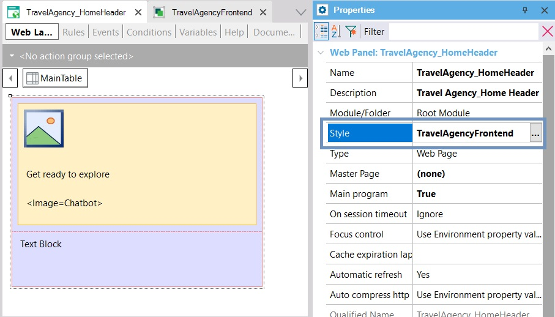
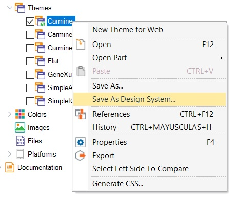

Design System Object - How to associate a Design System Object to your screens
If you need that a Web Panel object takes the definitions of the Design System object Classes and Tokens, you must set the Web Panel Style property. In the example, it was changed from the default value, Carmine, to the name given to the Design System object.

However, something more general could also be done: modify this default by changing the property at the version level; in this way, any new object created with Style will have the Design System Object indicated there.

Note: for a while, the Theme object will coexist with the Design System Object that has been released to replace it. That’s why the Carmine Theme is still the default. However, you can always convert it to a Design System Object:

Take into account that for Panel objects the Style property can be set for each Platform (under the Platforms node).
Availability
Since GeneXus 17 Upgrade 6.
| Backlinks | |
| Category:Design System Object | Toc:Design Systems |